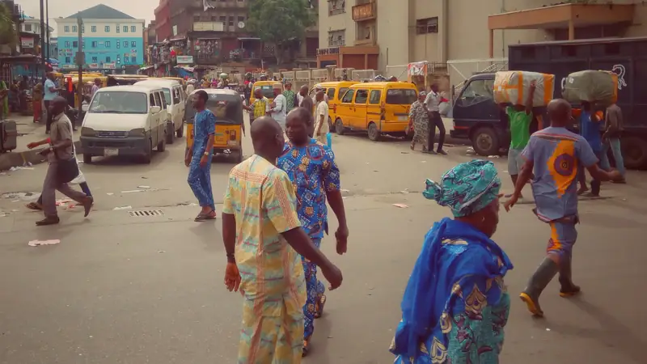

eezr
Heat
Heat guide for Nigeria
Today
Map
Stay safe
Words
About

How hot does it feel where you are?
See the live heat for your town and what to do to stay safe.
What the heat levels mean
On any hot day
Save
°C
Back to now
Where are you?
Use my location
Your places
Plan ahead
Tap a time to see what to do then. This is a forecast and can be a few degrees off, so check again before you go out.
Advice for
What to wear
Do
Avoid
Share link
Share as a picture